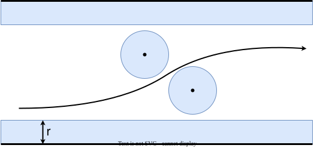
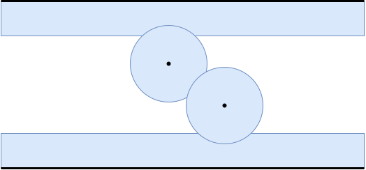

https://atcoder.jp/contests/abc181/tasks/abc181_f
を動かした時に、動かす円の中心が存在できない範囲を考えてみる。 壁もしくは障害物から距離 未満の位置に円の中心を配置することができないことを考えると、動かせない範囲は下の青色で示した領域の内部になる。


上の壁と下の壁が図で示した青色の領域を通じて繋がっていなければ円が通過でき、繋がっていれば円が通過できない。 繋がっているか繋がっていないかはUnionFindで判定できる。
- と 釘 が繋がっている <=>
- と 釘 が繋がっている <=>
- 釘 と 釘 が繋がっている <=>
これで が与えられたときの判定方法がわかったので、あとは を二分探索する。
https://atcoder.jp/contests/abc181/submissions/34127397 (Rust, 14ms)